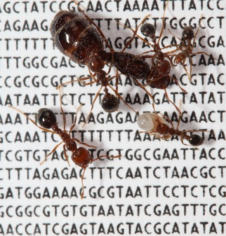
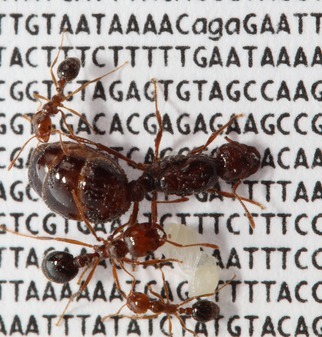
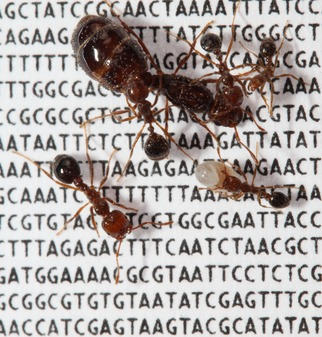
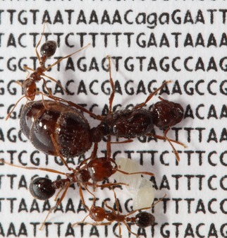
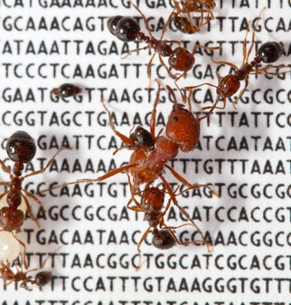
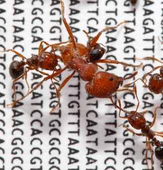
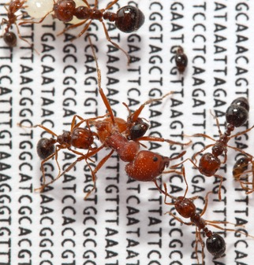

Solenopsis invicta fire ant workers tend to brood on scaffold Si_gnF.00413 of the S. invicta genome sequence. This species was accidentally introduced to the United States from South America in the 1930s. It is known for its aggressive behavior and potent venom.
Photograph courtesy of Romain Libbrecht & Yannick Wurm.
Solenopsis invicta fire ant workers (smaller) tend to their queen (larger) and brood (whitish) on scaffold Si_gnF.00413 of the S. invicta genome sequence. This species was accidentally introduced to the United States from South America in the 1930s. It is known for its aggressive behavior and potent venom.
Photograph courtesy of Romain Libbrecht & Yannick Wurm.
 


Solenopsis invicta fire ant workers (smaller) on scaffold Si_gnF.00413 of the S. invicta genome sequence defend against a Pogonomyrmex rugosus worker (bigger). Photograph courtesy of Romain Libbrecht & Yannick Wurm.
These photos represent the stimulating competition between parallel ant genome projects.

  